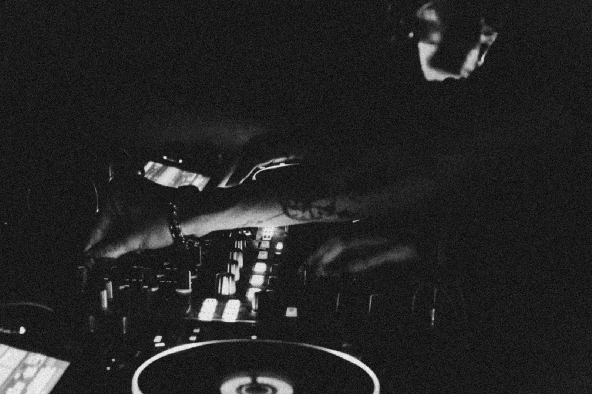
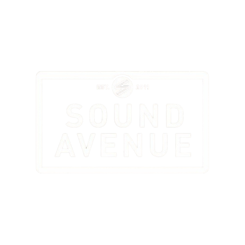
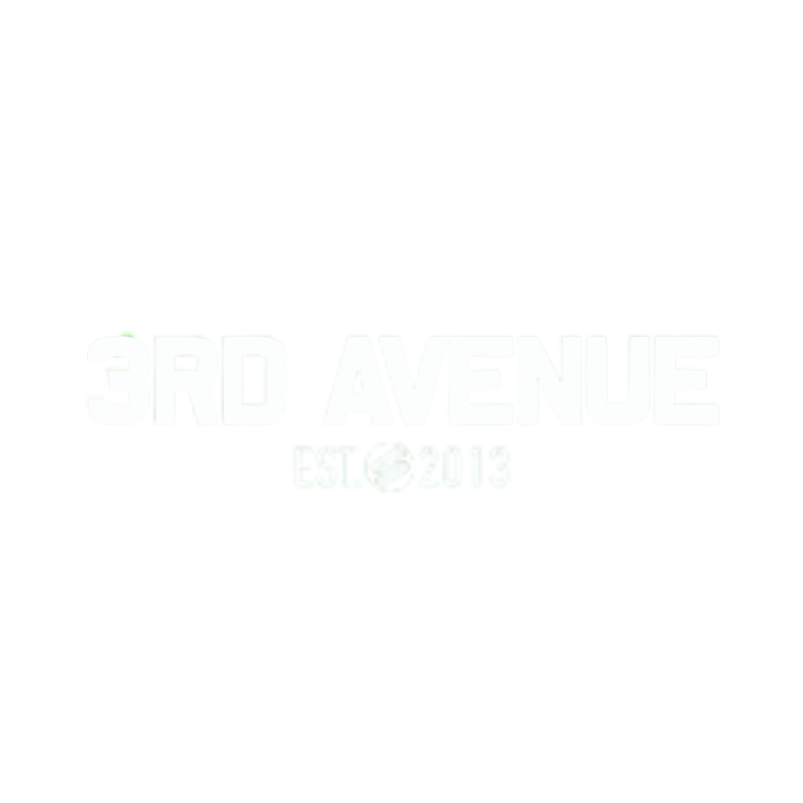

Booking · prensa · promoters
PRESSKIT
Manu Pavez — artista de progressive house. Pergamino, Argentina.
Biografía profesional
MANU PAVEZ
MANU PAVEZ es un artista argentino con años de trabajo minucioso en estudio, llevando su frequency storytelling al corazón del progressive house. Su firma aparece en sellos de referencia como Sound Avenue, Mango Alley, Droid9 South America, 3rd Avenue, Coral Tide y Traful, consolidando un perfil moderno, exportable y curado.
Su música y su número cuentan con el aval de figuras de primera línea: Sahar Z, Graziano Raffa, Ezequiel Arias, John Cosani, Hernán Cattáneo, Nick Warren y Mariano Mellino han respaldado su sonido; además, compartió cabina e hizo warm-ups para Roy Rosenfeld, Alex O'Rion, Soundexile, Graziano Raffa, confirmando tracción real en booth y programación. Con releases consistentes y una propuesta artística clara, Manu Pavez se proyecta como joven promesa del progresivo sudamericano: confiable para promotores, atractivo para audiencias exigentes y listo para escalar line-ups de salas boutique y festivales internacionales.
Compartió cabina con Alex O'Rion, Graziano Raffa, Mayro, Emi Galvan, Soundexile y Roy Rosenfeld. Tocó en Rosario, Buenos Aires, Chacabuco, Junín, Pergamino, Villa Gesell y Pinamar. Respaldaron su sonido Sahar Z, Graziano Raffa, Ezequiel Arias, John Cosani, Hernán Cattáneo, Nick Warren y Mariano Mellino.
En números
DATOS CLAVE
- 7+años en cabina
- 3.521seguidores
- 492Kreproducciones
- OrigenPergamino, Argentina
- GéneroProgressive House
- En cabina7+ años
- Primer release2020
- Sellos6+ internacionales
- Seguidores3.521
- Reproducciones492.000
- SetsWarm-up · prime time hipnótico
- Rider3× CDJ + DJM-900 / V10
Sellos


¿LO QUERÉS
EN TU LINE-UP?